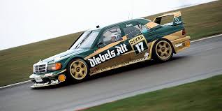
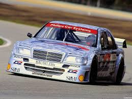
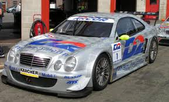

Historia en el DTM
Mercedes-Benz es, sin ningún género de dudas, la marca más exitosa en toda la historia del DTM. Su relación con el campeonato comenzó con el icónico Mercedes 190 E 2.5-16 EVO II, el turismo más agresivo y llamativo de su época, con su inconfundible alerón trasero y su motor de 16 válvulas afinado por Cosworth.
Pero fue en la segunda era del DTM —a partir de 1994— cuando las Flechas de Plata se volvieron imbatibles. Con el patrocinio de AMG y coches como el C-Klasse DTM y el CLK DTM, Mercedes construyó la dinastía más larga del campeonato. El artífice fue Bernd Schneider, quien ganó nada menos que cinco campeonatos entre 1995 y 2003.
En la era moderna, Gary Paffett, Paul di Resta y Jamie Green fueron sus estandartes. En 2018, Mercedes anunció su retirada para concentrarse en la Fórmula E, cerrando el capítulo más importante de la historia del campeonato.
Coches

Mercedes 190 E EVO II
1990 - 1993Un icono absoluto. Con aerodinámica extrema para su época: enormes alerones, faldones laterales y una mecánica afinada por Cosworth con más de 380 CV. Klaus Ludwig ganó el campeonato en 1992 con él, uno de los títulos más recordados de la historia del DTM.

Mercedes C-Klasse DTM
1994 - 2000La era de dominio absoluto. Desarrollado por AMG, fue el coche con el que Bernd Schneider escribió su leyenda. Motor V6 de alta cilindrada, aerodinámica avanzada y fiabilidad ejemplar. Ganó los campeonatos de 1995, 2000 y varios títulos de constructores consecutivos.

Mercedes CLK DTM
2001 - 2007De líneas más afiladas con el motor V8 de la nueva normativa. Bernd Schneider siguió dominando a su volante, sumando dos títulos más (2002 y 2003). Ningún otro coche ha sido tan completo en toda la historia del campeonato.
Pilotos Destacados
Bernd Schneider
Campeón DTM 1995 · 2000 · 2001 · 2002 · 2003
El piloto más exitoso de toda la historia del DTM. Cinco campeonatos con Mercedes AMG, un récord que nadie ha igualado. Schneider era el maestro de la consistencia: gestión impecable de neumáticos, tráfico y presión. Una leyenda absoluta del automovilismo de turismos.
Klaus Ludwig
Campeón DTM 1988 · 1992 · 1994
El "rey de la lluvia" del automovilismo alemán. Ludwig ganó tres campeonatos del DTM con Mercedes, siendo especialmente brillante en condiciones adversas. Su estilo agresivo pero controlado lo hacía letal en mojado, donde los rivales perdían la cabeza y él encontraba el ritmo perfecto.
Gary Paffett
Campeón DTM 2005 · 2018
El británico fue uno de los pilotos más rápidos de la historia reciente del DTM. Campeón en 2005 y de nuevo en 2018 —el año de la despedida de Mercedes—. Una historia de paciencia y dedicación que le convirtió en leyenda de la era moderna.